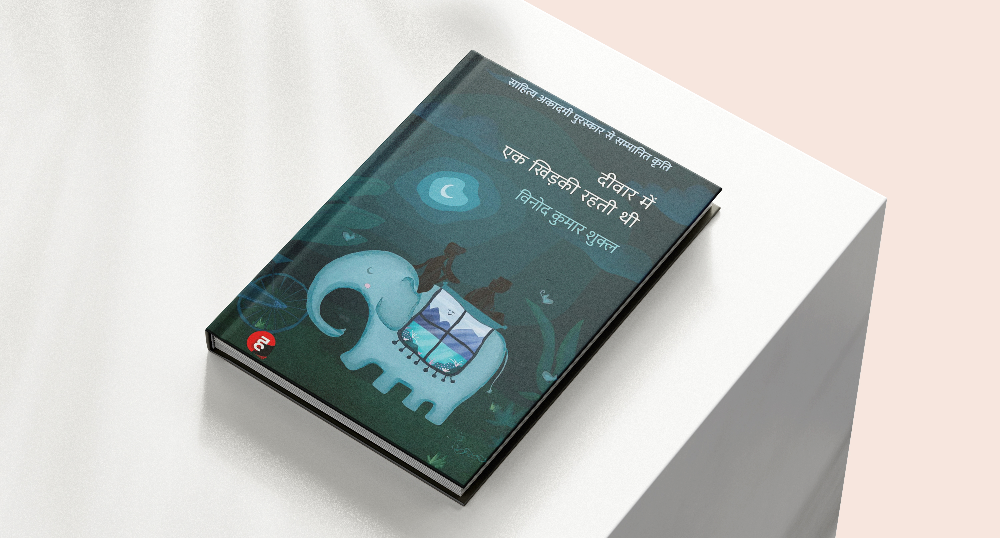
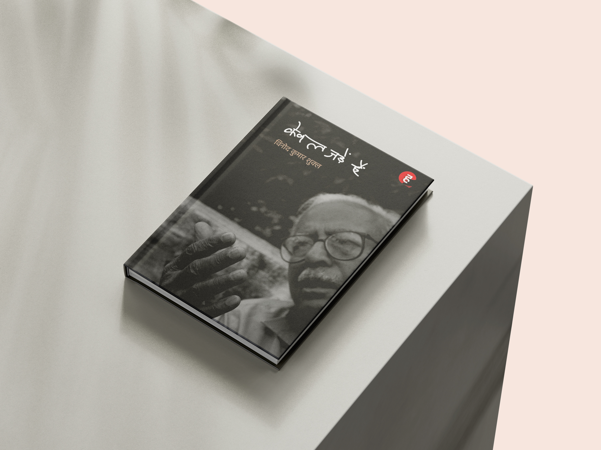
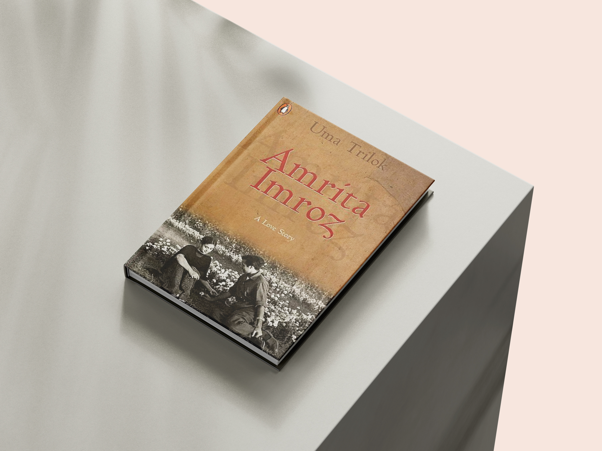

Angrezi Sahitya

दीवार में एक खिड़की रहती थी
Vinod Kumar Shukla writes in a way that makes the ordinary feel profound and slightly surreal. This novel follows a simple domestic life with such precise, unhurried observation that you finish it feeling like you've been somewhere very quiet and very true.
Buy on Amazon →Hindi Sahitya
दीवार में एक खिड़की रहती थी
Vinod Kumar Shukla writes in a way that makes the ordinary feel profound and slightly surreal. This novel follows a simple domestic life with such precise, unhurried observation that you finish it feeling like you've been somewhere very quiet and very true.
Buy on Amazon →
केवल जड़ें हैं
A poetry collection that rewards slow reading. Shukla has a gift for finding the uncanny inside the everyday — these poems are rooted (as the title suggests) but reach in unexpected directions. Lovely if you want Hindi poetry that isn't overwrought or sentimental.
Buy on Amazon →
अमृता प्रीतम और इमरोज़ की अमर प्रेम कथा
The story of Amrita Pritam and Imroz's 40-year relationship is one of the most remarkable in Indian literary history. This book is a tender, careful account of a love that defied every convention. Essential reading for anyone who cares about Amrita Pritam's work and life.
Buy on Amazon →All-Time Favourites

The Alchemist
I know everyone's read it, but I reread it every few years and always find something new. It's deceptively simple — a story about a shepherd boy seeking treasure — but the ideas about following your personal legend hit differently depending on where you are in life when you read it.
Buy on Amazon →
Zen Pencils
Inspirational quotes reimagined as comic strips. That sounds cheesy but the execution is beautiful — Gavin pairs quotes from writers, scientists, and philosophers with original illustrations that genuinely elevate the words. A great gift for creative people and a lovely coffee table book.
Buy on Amazon →7 Must-Read Design Books

Design as Art
Written in 1966 and still feels radical. Munari argues that design is an art form and artists should think like designers. Short, witty essays accompanied by his distinctive visual style. Essential reading for anyone in any creative field.
Buy on Amazon →
User-Friendly
A deeply researched history of how human-centred design came to shape the products we use today. From cockpit controls to smartphones — this traces the thinking behind why certain designs work and others kill people. Reads like a thriller, teaches like a textbook.
Buy on Amazon →
Creative Confidence
From the founders of IDEO, this is a practical manifesto for anyone who thinks they "aren't creative." Packed with exercises and stories that show how creativity is a skill you build, not a talent you're born with. Highly recommended for teams and individuals alike.
Buy on Amazon →
The Design of Everyday Things
The book that coined the term "affordance" in design. Once you read it you'll never use a badly designed door without feeling irrationally annoyed. Norman's core argument — that bad design blames users when it should blame designers — is as relevant as ever.
Buy on Amazon →
Emotional Design
The sequel to Everyday Things, and in some ways more interesting. Norman explores why we form emotional attachments to objects and how beauty affects usability. The three levels of design — visceral, behavioural, reflective — are a framework I think about constantly.
Buy on Amazon →
Steal Like an Artist
A short, illustrated manifesto about creative influence. Kleon argues that all creative work builds on what came before — and that's not plagiarism, it's how art evolves. Full of practical, liberating advice for anyone making things. Read it in an afternoon, think about it for years.
Buy on Amazon →My 2026 Reading List

Adventures in Stationery
A love letter to office supplies. Ward explores the surprising history behind paper clips, Post-it Notes, and staplers. Quirky and charming — ideal for anyone who takes disproportionate pleasure in a good notebook or pen.
Buy on Amazon →
A Guardian and a Thief
Megha Majumdar's follow-up to A Burning. Her prose is exact and electric, and her ability to inhabit characters across different strata of Indian society is extraordinary. On my list for early 2026.
Buy on Amazon →
October Junction
Dubey writes Hindi fiction with a distinctly contemporary urban voice. October Junction is reportedly a story about transit, connection, and the accidental meetings that change the course of things. Picked this up on a recommendation and looking forward to it.
Buy on Amazon →
The Elsewherians
Jeet Thayil is one of India's most interesting prose writers, and this novel apparently pushes his style further into experimental territory. On my list purely because his sentences are the kind you reread immediately.
Buy on Amazon →
Whole Numbers, Half Truths
A data journalist's examination of what statistics actually tell us about India — and what they hide. Rukmini S brings rigour and accessibility to questions about poverty, identity, and democracy. Essential for anyone who wants to understand contemporary India beyond the headlines.
Buy on Amazon →
The Madman's Library
A beautifully illustrated tour through history's strangest and most extraordinary books — fake atlases, books written in blood, medieval manuscripts about imaginary creatures. Perfect for bibliophiles who love the weird corners of history.
Buy on Amazon →